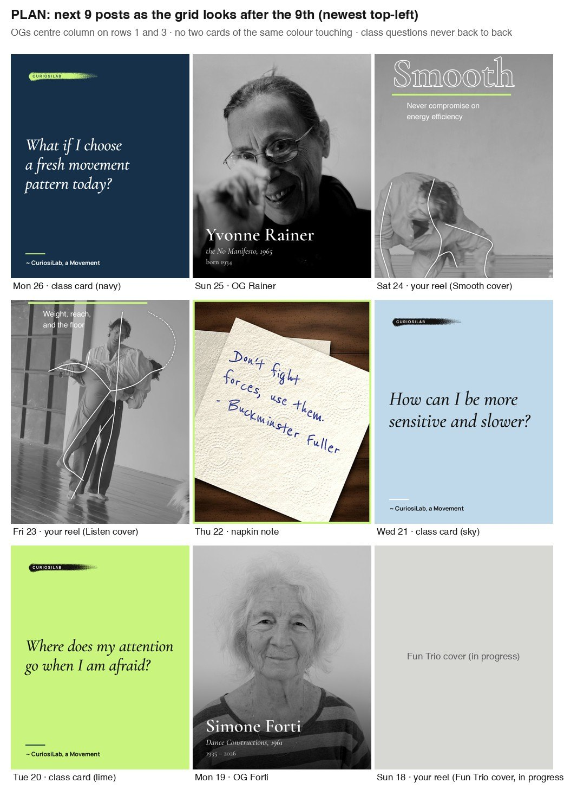

Ten OG portraits with a caption each, in the voice of your Paxton and Nancy posts. Read each caption and edit it right in the box. Tap Approve on the ones you like. If something is off, tap Change and say what. Nothing is posted from this page.

Portraits sit in the centre column on rows 1 and 3, class cards never touch the same colour, and your reels fill the footage slots when you have time. This is the plan for 18 to 26 Oct. The suggested day on each card below is when that OG would go out.
Suggested start: Rainer or Cage, whose photo and facts are the cleanest. Forti waits until her dates are confirmed.